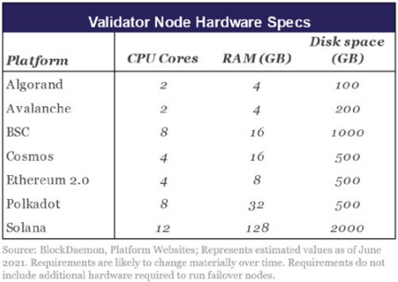
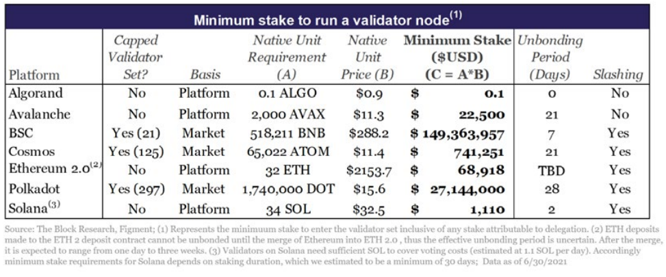
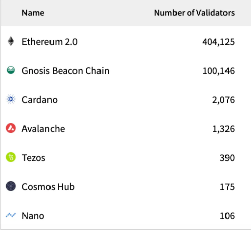
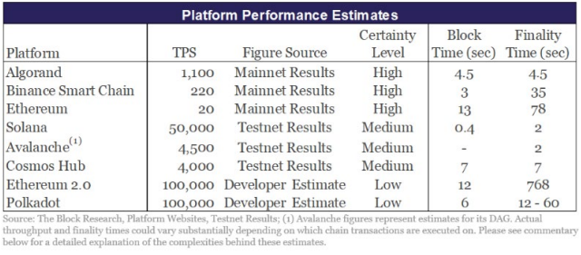

Comparing the top Smart contract platforms
What are smart contracting platforms?
Smart contract platforms, unironically, provide a venue for deploying smart contracts and decentralized applications. They are owned, operated, and secured by distributed bases of token holders and computer hardware operators which makes them difficult to censor and provides for their 24/7 operation. They serve as the base security layer of this emerging “decentralized economy stack”. And everything that is built on top of them inherits their security, performance, and censorship-resistance characteristics.
Let's look at some of the key metrics and fundamentals that investors and developer's consider while evaluating the Layer 1 landscape?
1.Market Cap
Market cap is calculated by multiplying the total number of coins that have been mined by the price of a
single coin at any given time.
One way to think about market cap is as a rough gauge for how stable an asset is likely to be. (It’s
important to note that even Bitcoin, crypto’s biggest market cap, still sees volatility.) But the same
way a bigger ship can safely navigate heavy weather, a cryptocurrency with a much larger market cap is
more likely to be a more stable investment than one with a much smaller market cap. Conversely digital
currencies with smaller market caps are more susceptible to the whims of the market – and can see huge
gains or dramatic losses in their wake.
1. Large-cap Market cap more than $10 billion
2. Mid-cap market cap between $1billion to $10 billion
3. Small-cap market cap of less than $1 billion
Problems with this mertic
-
The biggest problem with using market capitalization as a measure of how strong a particular cryptocurrency is that there are many situations where units of the cryptocurrency are not in liquid circulation. These locked up or lost cryptocurrency units can affect what the real market cap is of any cryptocurrency. When you’re looking at Bitcoin market cap, for example, it’s important to take into consideration that somewhere around 4 million Bitcoins are lost on servers somewhere. That’s according to a study from Chainalysis. So, when you look at standard market cap valuation of how much each Bitcoin is worth times how many Bitcoins there are, you really should take out the “missing” Bitcoin to see how much the company is actually worth.
-
Market cap is about price, not value. It does not reflect the value of the company or crypto asset you’re investing in. This is a fundamental distinction that is often overlooked. Price is what you pay for a coin or token, it has nothing to do with what you actually get aka value. It’s an indication of what people are paying for something, and this is usually driven by irrational sentiment, which has little connection to an asset’s real value. Assuming that whatever the market is willing to charge for an asset is equal to what it’s worth is a big mistake.
Native Token Distribution
Tokens are generally created in initial sales to either venture capital
firms or, in some cases, the general public to raise funds to support
development. Additionally, there are several other categories for which
token supply is typically “earmarked” at the token creation event:
i. Staking Rewards / Incentives represent tokens slated to be paid
out to validators and delegators or emitted in airdrops.
ii. Foundation / Ecosystem Support tokens are typically reserved for
building out infrastructure, securing strategic partnerships, and
supporting projects that are looking to deploy apps on these networks.
iii. Development Organization and Team tokens incentivize developers tasked with developing core
platform technology and conducting ongoing research
Native token value has a unique relationship with platform security; especially when it comes to PoS
networks. In PoS networks, the aggregate value of staked tokens serves as a proxy for how costly it can
be to attack the network. Networks with native tokens that are more valuable, more widely distributed,
and more commonly used for staking are more difficult to attack. All else equal, higher attack
difficulty makes platforms more attractive venues for deploying applications which could, in turn, drive
more usage and incremental token value. Hence, native token value and platform security are intertwined
and there is a potential for positive feedback loops. The opposite effect is also true. If a native
token has little to no value, its platform provides weak censorship resistance and security guarantees.
And it will most likely not be an attractive venue for deploying applications that could drive
incremental token value.
2.Security
Security should always be top priority when evaluating any Layer 1.
At the core, blockchains are settlement layers for value. If the settlement layer isn’t secure, it’s not
worth anything. You need assurances that when you transact on the network that your transaction is
final. There should be no chance of reversibility from bad actors.
Attack vector 1: 33% attack
How much does it cost for an entity to become 33% validator?
PoS networks reach an agreement and transactions are finalized when 2/3 or 66% of the aggregate
financial
stake in the network agrees that a block or a series of blocks are final. 33% is generally only enough
to
halt the chain so it can't come to consensus and produce new blocks, not to actually perform a double
spend.
For that you'd need a whopping 66%. So, the blockchains with high Staking amount are secure. The amount
staked in different blockchains is showed below.
3.Demand for block space
How much people value using layer1==fee paid.
Let's understand why this is important, all the blockchains have limited number of transition that they can make ,one's the limit is hint the user's have to pay higher fee so that the validator include there transaction in the block. So fee paid is directly link to demand for blockchain.
4.Profit ability of blockchain
Profit=Total Revenue - Total Expenses
Total revenue is the transaction fee paid to validators
Total expenses is the issuance of native token to validators
Profit=Transaction fee - Token issuance
If a blockchain is paying more for security than the revenue they bring in, they're running a deficit.
Which means the coin holders are paying for the security. As result the coin holder are losing the value
because of issuance.
Across the board, blockchain networks today are spending more on security costs than they’re bringing in
revenue.
This is okay – the ecosystem is young. There’s a lot of development that needs to be done. There are a
lot more people to onboard into this technology.
The first profitable blockchain will be Ethereum after the post merge.
As on 1/4/2022
Source(banklesshq)5.Are there developers
Without developers, there are no applications.
Without applications, there are no users.
No users = no value.
As a result, a robust developer ecosystem is essential for the success of a Layer1 . Developers build
killer apps that attract end-user to the platform. Which in turn attract more developer to the platform.
Fortunately, Electric Capital does a great job every year diving into the developer ecosystem across
different networks.
6.Decentralization
Decentralization should be a persistent and mission-critical goal for communities building blockchain infrastructure. It is how security and censorship resistance are achieved and it has far-reaching consequences for entire ecosystems.
i. The computational requirements to run a validator node
While PoS networks are substantially less computationally intensive than their PoW counterparts, they nonetheless require upfront and ongoing spend on computer infrastructure to run blockchain software. Depending on how networks are structured, requirements can vary substantially. They span inexpensive consumer-grade hardware such as Raspberry Pis and laptops that cost around $100 to $1,000 to industrial-grade hardware setups that cost thousands of dollars and require substantial recurring maintenance spend.
ii. The minimum financial stake required to enter the validator set.
In addition to procuring hardware to run blockchain software, validators in PoS networks are typically required to "lock-up" a minimum amount of financial stake to enter the validator set. As displayed in the table below, requirements vary substantially on a network-to-network basis.
iii. Staking Nodes Distribution
7.Performance
While consensus algorithms are a critical component of how networks operate, they also impact one of their most important attributes: performance. Performance is best measured through two metrics: throughput levels and finality. Throughput defines how many transactions a network can handle in a set amount of time and is typically measured in transactions per second (TPS). Finality defines how long a user typically needs to wait until there is a reasonable assurance that their transactions will not be rolled back
Conclusion
So, it up to you to decide which blockchain you value the most base on the different accepts presented.